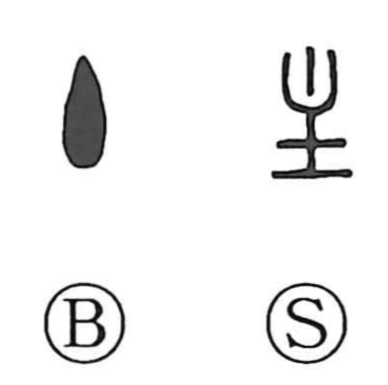

主

Kun: nushi, omo, aruji, omoni | On: shu, su
master ・ owner ・ lord ・ main
Explanation
主 begins with the flame of a lamp. Early bronze writing can show the flame alone; the fuller form adds the oil dish and its support below. The whole is a picture of the burning light.
Fire was sacred, and its care belonged to the household's master or elder. A related early form of 叟 shows someone handling fire within an ancestral shrine. The keeper of the flame could therefore be called 主, transferring the name from the sacred fire to the person responsible for it.
From that role come master, owner, chief, and the person directing an affair. 主 also names the place where a spirit is lodged, as in an ancestral tablet. What holds or governs the centre then gives the adverbial sense ‘chiefly’ or ‘mainly.’